Chapter 03 The Discrete Fourier Transform
- The discrete Fourier transform (DFT) is one of the two most common, and powerful, procedures encountered in the field of digital signal processing. (Digital filtering is the other.)
Continuous Fourier Transform
A prominent quote from Lord Kelvin better states this sentiment: “Fourier’s theorem is not only one of the most beautiful results of modern analysis, but it may be said to furnish an indispensable instrument in the treatment of nearly every recondite question in modern physics.
DFT equation (exponential form):
3.1 UNDERSTANDING THE DFT EQUATION
DFT equation (rectangular form):
-
the th DFT output component
- the index of the DFT output in the frequency domain.
- .
-
the sequence of input samples
- the time-domain index of the input samples.
- .
-
the number of samples of the input sequence and the number of frequency points in the DFT output.
- The value is an important parameter because it determines how many input samples are needed, the resolution of the frequency-domain results, and the amount of processing time necessary to calculate an -point DFT.
-
The exact frequencies of the different sinusoids depend on both the sampling rate at which the original signal was sampled, and the number of samples .
- For example, if we are sampling a continuous signal at a rate of 500 samples/second and, then, perform a -point DFT on the sampled data, the fundamental frequency of the sinusoids is or Hz.
The separate DFT analysis frequencies are
The magnitude
Then the magnitude of is
3.1.1 DFT Example 1
Consider performing an 8-point DFT on a continuous input signal containing components at 1 kHz and 2 kHz a input signal:
And we use samples/second.
Then
our eight samples are:
from scipy.fft import fft, fftfreq
import numpy as np
fs = 8000 # Sampling rate in Hz
n = np.arange(0, 8, 1) # Time vector
ts = 1.0 / fs
# Signal with 1000 Hz and 2000 Hz components
x = 1.0*np.sin(2*np.pi*1000*n*ts) + 0.5*np.sin(2*np.pi*2000*n*ts + (3/4)*np.pi)
x
array([ 0.35355339, 0.35355339, 0.64644661, 1.06066017,
0.35355339, -1.06066017, -1.35355339, -0.35355339])
We can either use scipy.fft or manual:
X = fft(x)
np.around(X,4)
array([ 0. -0.j , -0. -4.j , 1.4142+1.4142j,
0. +0.j ,-0. -0.j , 0. -0.j , 1.4142-1.4142j, -0. +4.j ])
N = 8
Y = np.array([0+0*1j]*N)
for m in range(N):
Y[m] = 0 + 0*1j
for n in range(N):
Y[m] = Y[m] + x[n] * (np.cos(-2*np.pi*n*m/N) + 1j*np.sin(-2*np.pi*n*m/N))
np.around(Y,4)
array([ 0. +0.j , -0. -4.j , 1.4142+1.4142j,
0. -0.j , -0. -0.j , 0. +0.j , 1.4142-1.4142j, -0. +4.j ])
np.allclose(X, Y)
True
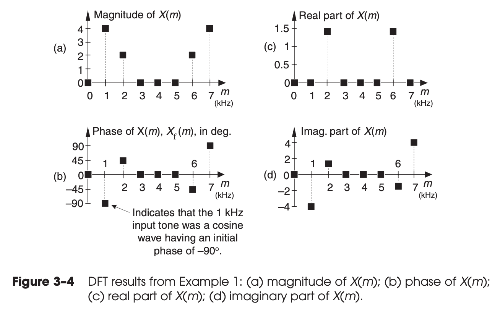
We have the following observations from this figure:
-
By looking at the , we can see, , that means has no DC component.
-
Looking at Figure 3–4(b), we might notice that the phase of is degrees. It compares against a wave at frequency .
- At the frequency , the phase is , which corresponds to . This is correct, because .
- At the frequency , the phase is , which corresponds to . This is correct, because , so .
-
2 open questions:
- What are the components when .
- Why the max magnitude is instead of .
2 very important characteristics of the DFT that we should never forget. * any individual output value is nothing more than the sum of the term-by-term products, a correlation, of an input signal sample sequence with a cosine and a sinewave whose frequencies are complete cycles in the total sample interval of samples. This is true no matter what the sample rate is and no matter how large is in an -point DFT. * The second important characteristic of the DFT of real input samples is the symmetry of the DFT output terms.
3.2 DFT SYMMETRY
Consider is a real signal. Using equation (3-2), we have
- If that real input function is even, then is always real and even.
- If the real input function is odd, then is always pure imaginary.
3.3 DFT LINEARITY
3.4 DFT MAGNITUDES
- When a real input signal contains a sinewave component, whose frequency is less than half the sample rate, of peak amplitude with an integral number of cycles over input samples, the output magnitude of the DFT for that particular sinewave is where
- If the DFT input is a complex sinusoid of magnitude (i.e., ) with an integer number of cycles over samples, the output magnitude of the DFT for that particular sinewave is
The other 2 forms of DFT
Or
3.5 DFT FREQUENCY AXIS
- Just remember that the DFT’s frequency spacing (resolution) is .
- Each DFT output term is the sum of the term-by-term products of an input time-domain sequence with sequences representing a sine and a cosine wave.
- For real inputs, an -point DFT’s output provides only independent terms.
- The DFT is a linear operation.
- The magnitude of the DFT results is directly proportional to .
- The DFT’s frequency resolution is .
3.6 DFT SHIFTING THEOREM
Consider and
3.6.1 DFT Example 2
We still use the same example in 3.1.1
And let , here is the python code
from scipy.fft import fft, fftfreq
import numpy as np
fs = 8000 # Sampling rate in Hz
n = np.arange(0, 8, 1) # Time vector
ts = 1.0 / fs
# Signal with 1000 Hz and 2000 Hz components
x = 1.0*np.sin(2*np.pi*1000*n*ts) + 0.5*np.sin(2*np.pi*2000*n*ts + (3/4)*np.pi)
x_1 = np.roll(x, -3)
x_1
array([ 1.06066017, 0.35355339, -1.06066017, -1.35355339, -0.35355339, 0.35355339, 0.35355339, 0.64644661])
X_1 = fft(x_1)
np.around(X_1,4)
array([ 0. -0.j , 2.8284+2.8284j, 1.4142-1.4142j, -0. +0.j ,
0. -0.j , -0. -0.j , 1.4142+1.4142j, 2.8284-2.8284j])
X_2 = np.array([0+0*1j]*N)
for m in range(N):
X_2[m] = np.exp(1j * 2 * np.pi * 3 * m / N) * X[m]
np.around(X_2,4)
array([ 0. +0.j , 2.8284+2.8284j, 1.4142-1.4142j, -0. +0.j ,
0. -0.j , -0. -0.j , 1.4142+1.4142j, 2.8284-2.8284j])
np.allclose(X_1, X_2)
True
3.7 INVERSE DFT
Here is the python code to implement it
from scipy.fft import fft, fftfreq, ifft
import numpy as np
fs = 8000 # Sampling rate in Hz
n = np.arange(0, 8, 1) # Time vector
ts = 1.0 / fs
# Signal with 1000 Hz and 2000 Hz components
x = 1.0*np.sin(2*np.pi*1000*n*ts) + 0.5*np.sin(2*np.pi*2000*n*ts + (3/4)*np.pi)
X = fft(x)
x_ifft = ifft(X)
np.around(x_ifft,4)
array([ 0.3536+0.j, 0.3536+0.j, 0.6464+0.j, 1.0607+0.j, 0.3536+0.j,
-1.0607+0.j, -1.3536-0.j, -0.3536+0.j])
Y_inv = np.array([0+0*1j]*N)
for m in range(N):
Y_inv[m] = 0 + 0*1j
for n in range(N):
Y_inv[m] = Y_inv[m] + (1 / N) * X[n] * (np.cos(2*np.pi*n*m/N) + 1j*np.sin(2*np.pi*n*m/N))
np.around(Y_inv, 4)
array([ 0.3536+0.j, 0.3536+0.j, 0.6464+0.j, 1.0607+0.j, 0.3536+0.j,
-1.0607+0.j, -1.3536-0.j, -0.3536+0.j])
np.allclose(x_ifft, Y_inv)
True
3.8 DFT LEAKAGE
For a real cosine input having cycles ( need not be an integer) in the -point input time sequence, the amplitude response of an -point DFT bin in terms of the bin index is approximated by the sinc function
The python code to plot the signal.
Note we set the frequency of the sine wave to be
So when sampling frequency is , 64 samples will have cycles.
Let's first plot when , i.e. 3 full periods over 64 samples.
# exactly 3 periods over 64 samples
N = 64
n = np.arange(0, N, 1)
fs = 1000 * 64 # Sampling rate in Hz
fo = 1000 * 3 # 3 full cycles for 64 samples
ts = 1.0 / fs
x = 1.0*np.sin(2*np.pi*fo*n*ts)
plt.xlabel('n');
plt.ylabel('x[n]');
plt.title(r'$x[n] = \sin (2\pi f_o n t_s)$');
plt.stem(n, x);
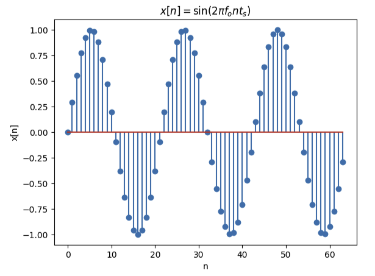
Next, we will plot when , i.e. 3.4 full cycles for 64 samples.
k = 16.4
k = 28.6
k = 3.4
fo = 1000 * k # 3.4 full cycles for 64 samples
x = 1.0*np.sin(2*np.pi*fo*n*ts)
plt.xlabel('n');
plt.ylabel('x[n]');
plt.title(r'$x[n] = \sin (2\pi f_o n t_s)$');
plt.stem(n, x);
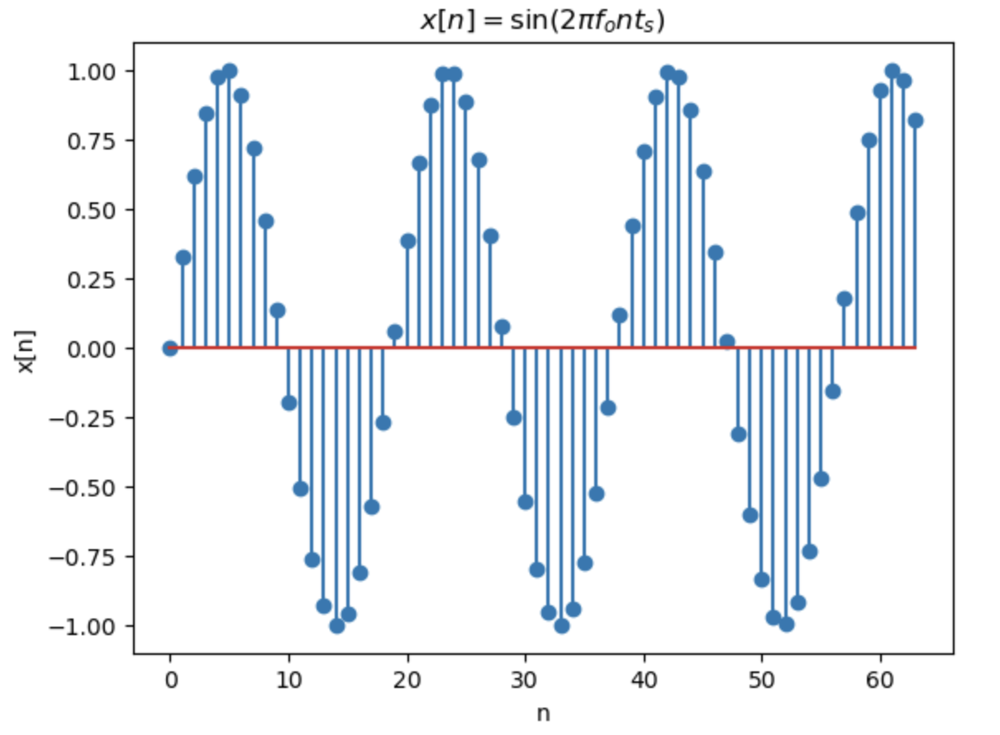
Finally, we will plot the DFT and use function to approximate the magnitude.
X = fft(x)
plt.xlabel('m');
plt.ylabel(r'$|X[m]|$');
plt.title(r'Plot of signal $|X(m)|$');
X_m = np.absolute(X)
plt.stem(n, X_m)
X_sinc = np.zeros_like(X_m)
for m in range(N):
if m >= N // 2:
X_sinc[m] = np.absolute(N / 2 * np.sinc((k - (N - m))))
else:
X_sinc[m] = np.absolute(N / 2 * np.sinc((k - m)))
plt.stem(n, X_sinc, 'r')
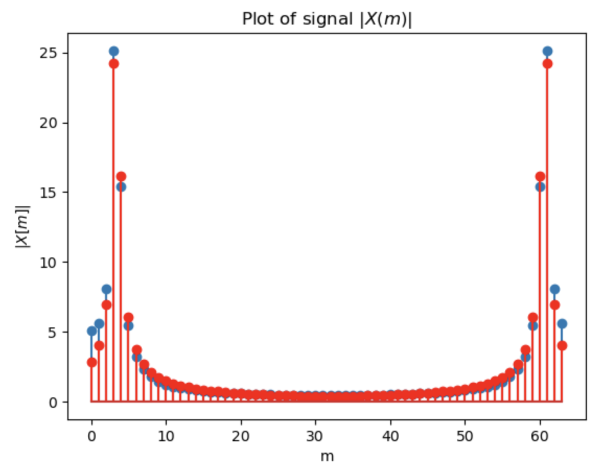
As we can see use can only approximate the amplitude, but not exactly match.
- Note here in the python code, since , so .
- Also note here we use the property that if is real,
then , that's why we have the
if-else.
3.9 Windows
Learning Objective
- Verify the square window is indeed
sincfunction in python. - Verify the equation in the text book is same as the function
in
scipy. - Plot the magnitude response of the window function.
- Verify the windows are indeed working, i.e. reduce leakage.
Why do we use windows function
- We want to minimize the sidelobes of
sincfunction. - The reason for DFT leakage is because the beginning and the end of the sample interval has a value jump. E.g., when we have 3.4 periods for 64 samples. So we need to make them smooth.
- When
Nsamples arem(integer) periods, then beginning and the end of the sample interval are smooth. Otherwise they have a jump.
The Fourier transform of square function
- Consider the following window function
Compute
Also .
The window function
- Hamming, Hanning, and triangular windows reduce the time-domain signal levels applied to the DFT.
- They reduced sidelobe levels relative to the rectangular window.
- Their main lobe peak values are reduced relative to the rectangular window.
This is how to genenerate hanning window, note that we are using the N-1 instead of N
np.cos(2 * np.pi * n / (N-1)).
This makes me think when we perform 16-point
fft, we should generate a hanning window of . And then use the first 16-point to multiply the sampled data.
# https://numpy.org/doc/stable/reference/generated/numpy.hanning.html
N = 16
window = np.hanning(N)
print(len(window))
print(f'window is: {window}')
n = np.arange(0, N, 1)
print(n)
window_manual = 0.5 - 0.5 * np.cos(2 * np.pi * n / (N-1))
print(f'window_manual is: {window_manual}')
np.allclose(window, window_manual)
True
Similarly, this is how to generate hamming window using numpy or manually.
# https://numpy.org/doc/stable/reference/generated/numpy.hamming.html
N = 16
n = np.arange(0, N, 1)
window = np.hamming(N)
print(f'window is: {window}')
window_manual = 0.54 - 0.46 * np.cos(2 * np.pi * n / (N-1))
np.allclose(window, window_manual)
The magnitude response of the window function
- Hanning
# https://numpy.org/doc/stable/reference/generated/numpy.hanning.html
N = 128
import matplotlib.pyplot as plt
from numpy.fft import fft, fftshift
window = np.hanning(N)
plt.plot(window)
plt.title("Hann window")
plt.ylabel("Amplitude")
plt.xlabel("Sample")
plt.show()
plt.figure()
A = fft(window, 2048) / (N / 2)
mag = np.abs(fftshift(A))
freq = np.linspace(-0.5, 0.5, len(A))
with np.errstate(divide='ignore', invalid='ignore'):
response = 20 * np.log10(mag)
response = np.clip(response, -100, 100)
plt.plot(freq, response, '-.')
plt.title("Frequency response of the Hann window")
plt.ylabel("Magnitude [dB]")
plt.xlabel("Normalized frequency [cycles per sample]")
plt.axis('tight')
plt.xlim([0, 0.12])
plt.ylim([-60, 1])
plt.show()
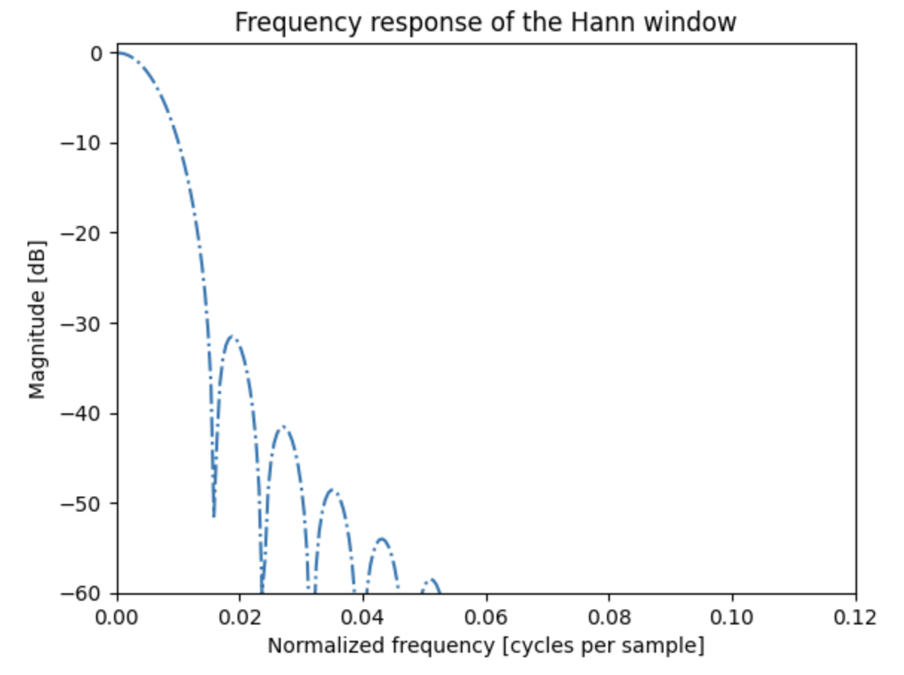
- Hamming
# https://numpy.org/doc/stable/reference/generated/numpy.hamming.html
window = np.hamming(N)
plt.plot(window)
plt.title("Hamming window")
plt.ylabel("Amplitude")
plt.xlabel("Sample")
plt.show()
plt.figure()
A = fft(window, 2048) / (N/2)
mag = np.abs(fftshift(A))
freq = np.linspace(-0.5, 0.5, len(A))
response = 20 * np.log10(mag)
response = np.clip(response, -100, 100)
plt.plot(freq, response, '-.')
plt.title("Frequency response of Hamming window")
plt.ylabel("Magnitude [dB]")
plt.xlabel("Normalized frequency [cycles per sample]")
plt.axis('tight')
plt.xlim([0, 0.12])
plt.ylim([-60, 5])
plt.show()
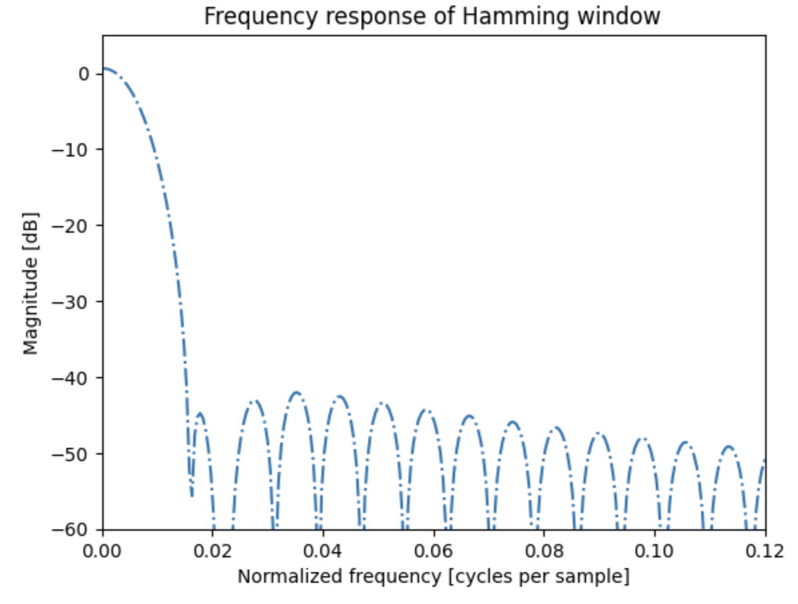
Apply window function
- We apply the hanning window function to the sine wave which has 3.4 cycles over 64 sampling points.
N = 64
n = np.arange(0, N, 1)
k = 3.4
fs = 1000 * 64 # Sampling rate in Hz
ts = 1.0 / fs
fo = 1000 * k # 3.4 full cycles for 64 samples
x = 1.0*np.sin(2*np.pi*fo*n*ts)
plt.figure()
plt.stem(n, x * np.hanning(N + 1)[:N])
plt.figure()
X = fft(x)
plt.xlabel('m');
plt.ylabel(r'$|X[m]|$');
plt.xlim([0, 32])
plt.title(r'Plot of signal $|X(m)|$');
X_m = np.absolute(X)
plt.stem(n, X_m, 'o')
x_win = x * np.hanning(N + 1)[:N]
X_win = fft(x_win)
X_win_m = np.absolute(X_win)
plt.stem(n, X_win_m, 'r')
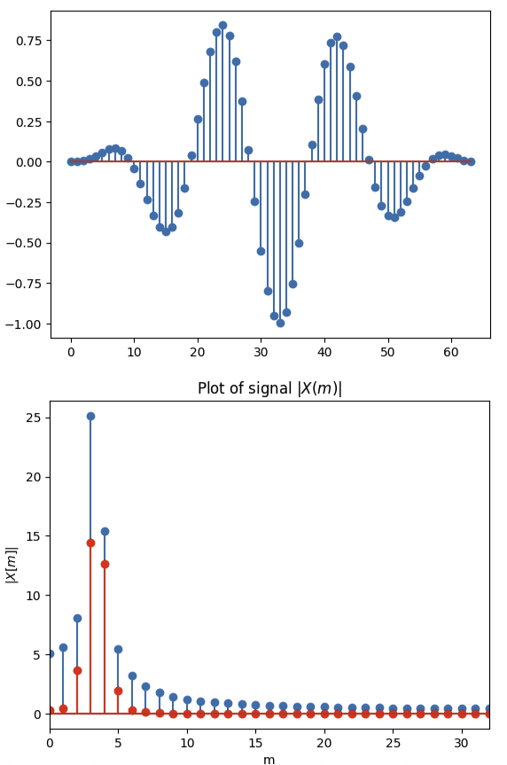
- If we use the following input signal, we can see that by applying the hanning window, it's much easier to spot the component.
N = 64
n = np.arange(0, N, 1)
k = 3.4
fs = 1000 * 64 # Sampling rate in Hz
ts = 1.0 / fs
fo = 1000 * k # 3.4 full cycles for 64 samples
fo1 = 1000 * 7 # 7.0 full cycles for 64 samples
x = 1.0*np.sin(2*np.pi*fo*n*ts) + 0.1*np.sin(2*np.pi*fo1*n*ts)
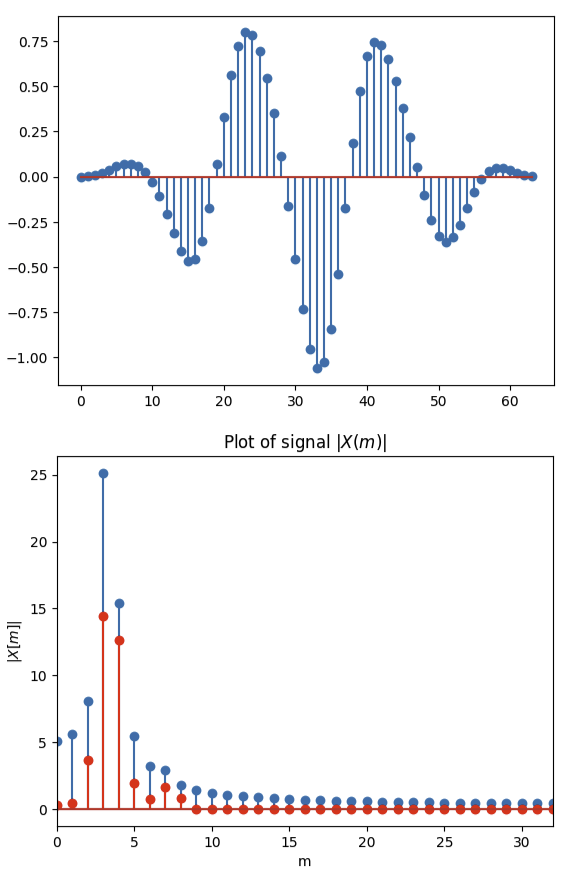
3.10 DFT Scalloping loss
- If we superinterpose several , we get the following diagram.
- The gain in the middle is , so
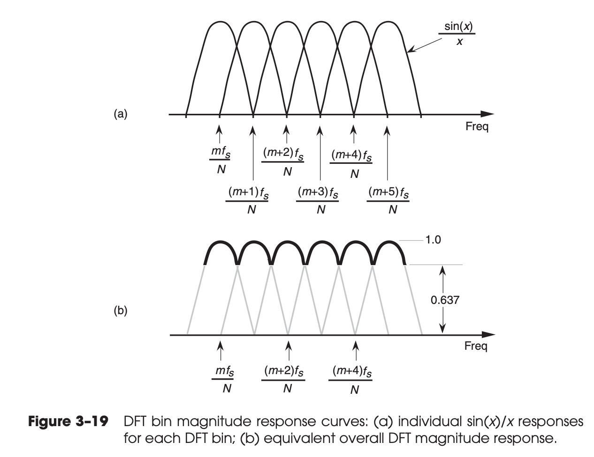
- The scalloping loss of a Hanning window is approximately 0.82, or –1.45 dB, halfway between bin centers.
3.11 DFT RESOLUTION, ZERO PADDING, AND FREQUENCY-DOMAIN SAMPLING
Learning Objective
- Plot the figure 3.21.
Continuous Fourier Transform
- Suppose we have a signal which has full cycles of sine wave and then extends to infinity in both directions.
- If we apply continuous Fourier transform (CFT), we should get the following diagram 3-20 (b).
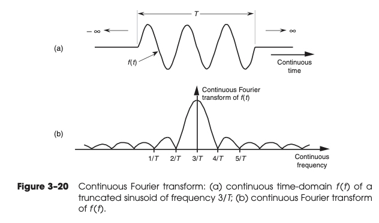
- And this is the code to plot when we patch zeros to make -point FFT.
- First note, the peak of the main lobe shifted from 3 to 6, because we need to maintaine
- As a result, when using
sincfunction, we need to use to do the approximation. - Finally notice, the
sincfunction can only approximate the the , not exactly match. As shown in the figure below.
N = 32
X = fft(x, N)
plt.figure()
plt.xlabel('m');
plt.ylabel(r'$|X[m]|$');
plt.title(r'Plot of signal $|X(m)|$');
X_m = np.absolute(X)
plt.stem(np.arange(0, N, 1), X_m)
n1 = np.arange(0, N, 0.1)
plt.plot(n1, np.absolute(8 * np.sinc(0.5*(n1 - 6))), 'r--')
plt.xlim([0, N*3/8 + 0.5])
plt.show()
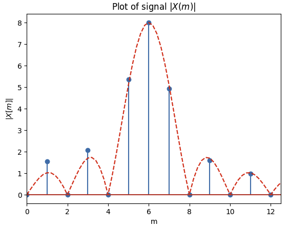
The definition of DTFT
- Discrete-time Fourier transform (DTFT): The DTFT is the continuous Fourier transform of an L-point
discrete time-domain sequence.
- On a computer we can’t perform the DTFT because it has an infinitely fine frequency resolution
- We can approximate the DTFT by performing an -point DFT on an -point discrete time sequence where .
- The rule by which we must live is: To realize Hz spectral resolution, we must collect seconds, worth of nonzero time samples for our DFT processing.
3.12 DFT PROCESSING GAIN
-
Learning Objective for this section
- Be able to reproduce the figure in 3.22 (achieved!)
-
DFT can pull signals out of background noise, this is called inherent correlation gain that takes place in any N-point DFT.
- Integration gain is possible when multiple DFT outputs are averaged.
3.12.1 Processing Gain of a Single DFT
- It’s valid to think of a DFT bin as a kind of bandpass filter whose band center is located at .
- When increases
- DFT output magnitude increases, eq. 3-17 .
- the DFT output bin main lobes become narrower.
- Here is the code to show DFT of a spectral tone (a
constant-frequency sinewave) added to random noise.
- We keep the input frequency
- For sampling frequency, we can change the
scale = 1, 4, 16to achieve - Another parameter to play with is the
noise_scale, here, we set it to be 4X of the signal amplitude. - In the first figure, we can see the noise is all over the place.
- But in the second figure, we can clearly see the noise is suppressed.
# exactly m periods over N samples
scale = 16
m = 20
N = 64 * scale
n = np.arange(0, N, 1)
fs = 1000 * N # Sampling rate in Hz
fo = 1000 * m # m full cycles for N samples
ts = 1.0 / fs
amp = 1.0
x = amp*np.sin(2*np.pi*fo*n*ts)
noise_scale = 4.0
white_noise = np.random.uniform(low=-noise_scale*amp, high=noise_scale*amp, size=N)
plt.figure()
plt.plot(np.arange(0, N, 1), x)
plt.plot(np.arange(0, N, 1), white_noise, 'ro')
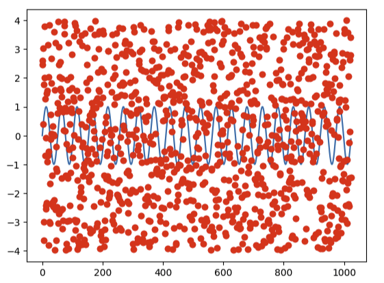
X = fft(x + white_noise, N)
plt.figure()
plt.xlabel('DFT bin number');
plt.ylabel(r'$|X[m]|$');
plt.title(r'Bin power in dB');
X_m = np.absolute(X)
X_m_max = max(X_m)
X_m_db = 20 * np.log10(X_m/X_m_max)
plt.plot(np.arange(0, N, 1), X_m_db)
plt.xlim([0, N // 2])
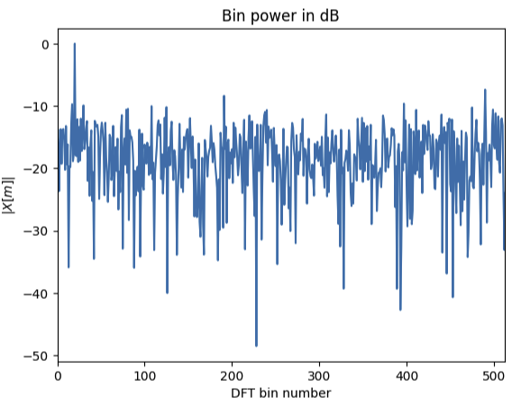
- To quantify the idea of DFT processing gain, we can define a signal-to-noise ratio (SNR) as the DFT’s output signal-power level over the average output noise-power level.
- But it's hard to quantify this for the following reasons:
- The energy for samples of random noise cannot be predicted.
- If the input frequency is not at bin center, we will see leakage.
- If window is applied, it will affect the leakage, thus the SNR.
- In practice, we are more interested to see the trend of SNR as the
function of .
- Noise rms is .
- Signal tone magnitude is .
- The equation for is
- Double the will increase by 3db.
3.13 The DFT of Rectangular Functions
- Learning Objective
- Understand the DFT of a rectangular function (3-34)
3.13.0 Introduction
3.13.1 DFT of a General Rectangular Function
With being nonzero only over the range of ,
We have
Replace , we have
And if we plug the back, we have
See the ch03.ipynb section 3.13 for an example to plot with scipy.fft.
Here is a summary:
n = np.arange(-17, 19) # 36 samples: -17, ..., 18
x = np.where((n >= -3) & (n <= 5), 1.0, 0.0)
N = n.size
X = fft(x, N)
# DFT is N-periodic in k: X[k] = X[k mod N] for any integer k
k = np.arange(-21, 22)
X_mag = np.abs(X[np.mod(k, N)])
X_mag_eq = np.abs(np.sinc(k*9/N)/np.sinc(k/N) * 9)
np.allclose(X_mag_eq, X_mag)
Note we verify it with np.sinc function.
- First, the DFT of a rectangular function has a main lobe, centered about the point. The peak amplitude of the main lobe is .
Plug into (3.36), it's easy to get .
If use L'Hopital's rule
- The next important thing to notice about the Dirichlet kernel is the main lobe’s width.
when , then .
So the main lobe width .
One note about the implementation in numpy. If we want to produce
a sequence of with , we can do the following 2
ways, the part has to wrap around.
- Method 1:
n = np.arange(-32, 32) # 64 samples: -32, ..., 31
x = np.where((n >= 28) | (n <= -26), 1.0, 0.0)
print(x)
- Method 2:
n = np.arange(0, 64) # 64 samples: -32, ..., 31
x = np.where((60 <= n) | (n <= +6), 1.0, 0.0)
print(x)
- Method 3 (probably more nature):
n = np.arange(-32, 32) # 64 samples: -32, ..., 31
x_for_fft = np.where((n >= -4) & (n <= 6), 1.0, 0.0)
x_for_fft = np.roll(x_for_fft, -32)
N = n.size
X = fft(x, N)
k = n
print(k.size)
K = 11
X_math = np.zeros(N, dtype=complex)
for i in n:
for k in n:
X_math[i] = X_math[i] + x[k] * (np.cos(-2*np.pi*k*i/N) + 1j*np.sin(-2*np.pi*k*i/N))
X_math_2 = np.zeros(N, dtype=complex)
for i in n:
X_math_2[i] = 0 + 0*1j
X_math_2[i] = np.exp((1j)*2*np.pi*i/N*(4-(K-1)/2)) * (np.sinc(i*K/N)/np.sinc(i/N) * K)
print(f'np.allclose(X_math, X): {np.allclose(X_math, X)}')
print(f'np.allclose(X_math_2, X): {np.allclose(X_math_2, X)}')